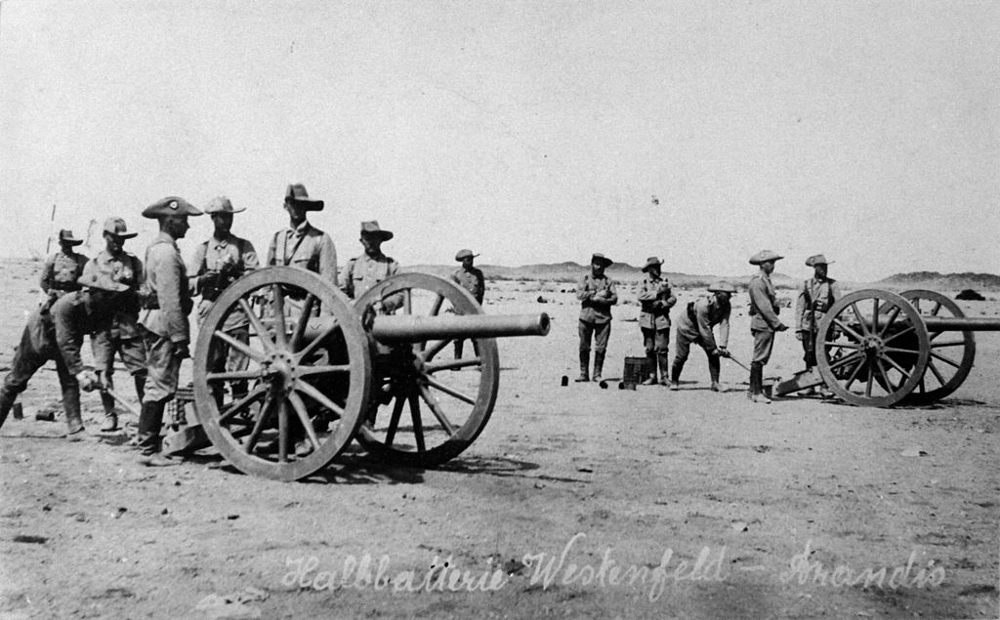
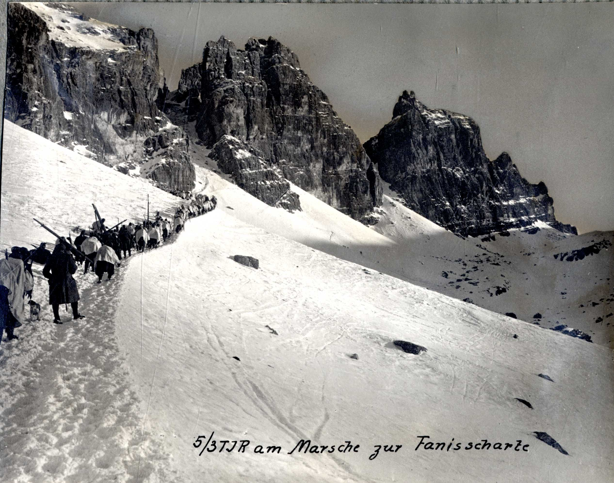

Das Kompetenzzentrum forscht in den Bereichen der regionalen Zeit- und Gegenwartsgeschichte, der Tiroler Regionalgeschichte der Neuzeit und der Gender Studies.

Unsere Ziele sind die historische Grundlagenforschung, die Intensivierung der Wissenschaftskooperation und die stärkere Vernetzung der regionalgeschichtlichen Forschung im Alpenraum.
Forschungsbereiche
- Regionale Zeit- und Gegenwartsgeschichte
- Tiroler Regionalgeschichte der Neuzeit
- Regionale Frauen- und Geschlechtergeschichte

Highlights
1914-2014 - 100 Jahre Erster Weltkrieg
Team
- Dr. Oswald Überegger
- Mag. Siglinde Clementi
- Dr. Andrea Di Michele
- Mag. Florian Huber
Publikationen
- Katastrophenjahre. Der Erste Weltkrieg und Tirol
- La guerra italo-austriaca (1915-1918)/li>
- Die Marketenderin. Frauen in Traditionsvereinen